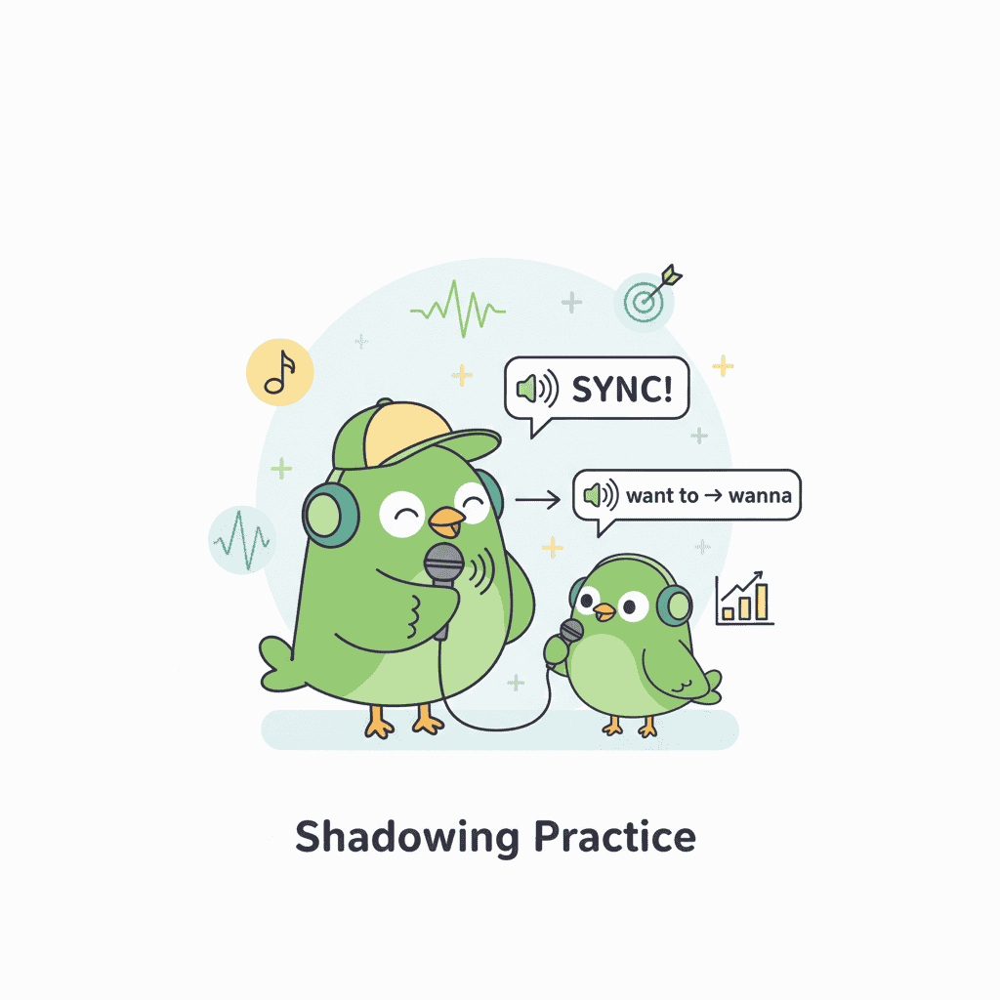
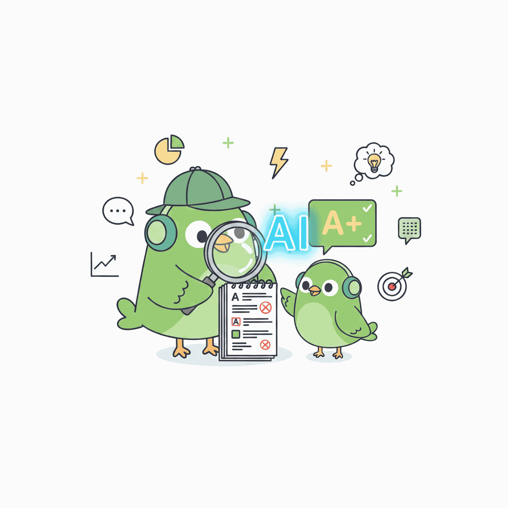

如何使用
只需 4 个步骤，让英语练习更简单、更有趣
1
选择素材
从我们精心策划的英语音频素材库中选择
2
选择模式
选择听写或跟读练习模式
3
开始练习
按照自己的节奏练习，AI 助手全程陪伴
4
追踪进度
查看统计数据，监控您的进步
强大的功能，高效的学习
听写练习
逐词听写，精准提升
通过我们智能的听写方法训练您的耳朵，在真实生活语境材料里像母语者一样听，90%的学习者在一个月内提高了听力理解能力。
单词模式
逐词听写，独立输入每个单词，适合初学者
整句模式
听完整句后输入，训练完整句子理解
即时反馈
AI 实时对比，精准定位拼写错误
🎯 多种难度等级
⏱️ 可调节播放速度
💡 提示功能

影子跟读
模仿母语者，掌握地道发音
跟读是语言学习的黄金方法。通过同步重复，训练口腔肌肉记忆，可帮助您掌握发音、语调和流利度。95%的学习者反馈，仅仅3个月，让你以母语般的节奏和自信开口说英语。
同步重复
与原声同步，训练即时反应能力
连读技巧
智能标记连读位置，掌握自然流畅度
语调模仿
学习重音、停顿和语调变化
🎯 提升口语流利度
🗣️ 纠正发音问题
📊 AI 评分反馈
AI 智能纠错
精准诊断，针对性提升
告别盲目练习。AI 智能分析您的输入，精准定位错误类型，提供个性化改进建议，让每次练习都有明确收获。
拼写检查
自动识别拼写错误和大小写问题
连读建议
建议自然连读方法，提升口语流利度
错误分析
分类统计错误类型，发现薄弱环节
📈 错误趋势追踪
🎯 个性化建议
⚡ 实时反馈

成长追踪
可视化进度，保持动力
学习的每一步都被记录。通过详细统计和可视化图表，清晰看到您的成长轨迹，让坚持更有意义。
练习统计
追踪每日练习次数、时长和准确率
连续记录
追踪连续学习天数，保持学习习惯
进度图表
可视化图表展示学习趋势
成就系统
解锁徽章和里程碑，激励持续学习
📊 详细数据
🏆 成就徽章
🔥 学习习惯
FAQ
常见问题
快速找到关于此工具的常见问题答案
它们是语言学习的"黄金搭档"。听写就像耳边的显微镜，帮助您捕捉每个隐藏细节。跟读就像"人类复印机"——您实时模仿母语者（不看文本）将地道节奏和语调直接刻入您的演讲肌肉。